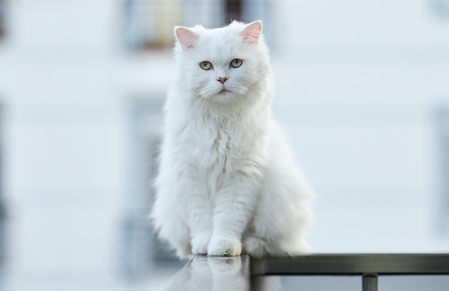
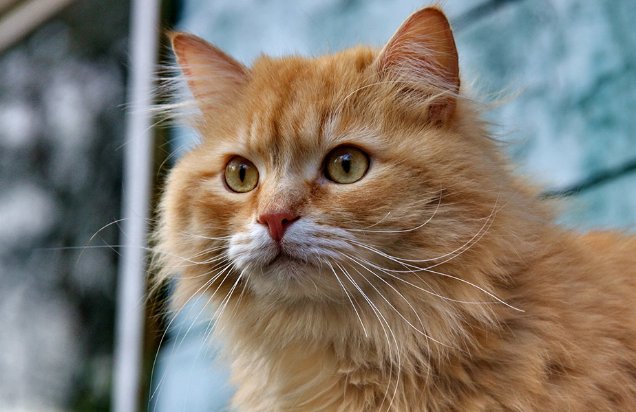
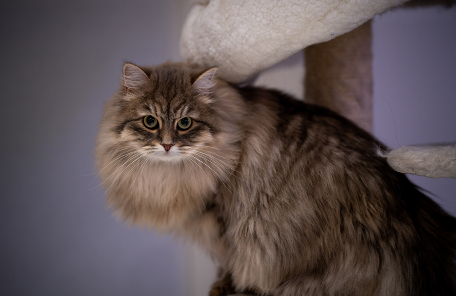
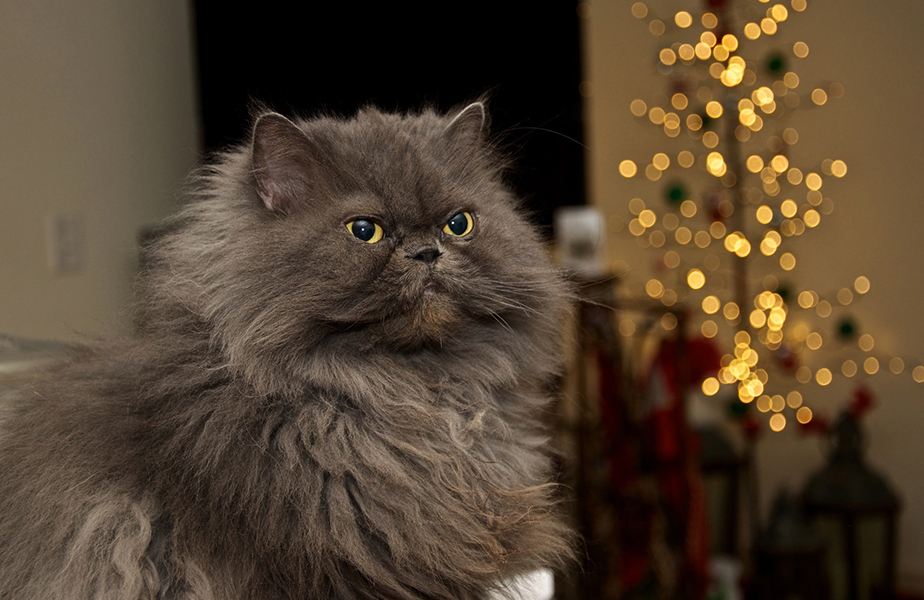

Kucing Anggora

Anggora adalah ras kucing alami yang sangat tua dan salah satu ras yang tertua di
dunia.
Berabad-abad lamanya kucing anggora mengalami seleksi alam di daerah pegunungan Ankara.
Iklimnya yang sedemikian rupa membuat tubuhnya kuat dan bulunya berkembang menjadi panjang.
Anggora adalah ras kucing yang tidak diketahui dari mana asal terbentuknya. Namun, beberapa teori
mengatakan bahwa anggora berasal dari seekor kucing liar dari Asia, yaitu kucing pallas.
Akan tetapi, teori ini diragukan karena kucing pallas memiliki sifat yang berbanding terbalik dengan
anggora. Teori lainnya mengatakan anggora berasal dari kucing liar afrika yang dijinakkan oleh suku
Tatar.
Keturunan kucing liar afrika dipercaya dibawa ke Turki oleh para pedagang Mesir pada zaman peradaban
Mesir Kuno. Dari kucing-kucing tersebutlah, anggora berkembangbiak melalui seleksi alam dan
perkawinan sedarah di daerah pegunungan yang tertutup.
Kucing Persia

Kucing Persia termasuk ke dalam kucing ras tua. Kucing ini berasal dari Mesopotamia, yang kemudian
dikenal sebagai Persia dan saat ini berada di negara Iran. Bulu panjangnya adalah hasil mutasi
alamiah, dan hal ini pula membuat seorang bangsawan Italia pada abad ke-17, Pietro Della Valle,
membawa kucing ini ke Eropa sekitar tahun 1620-an dan menjadikannya sebagai kucing berbulu panjang
pertama di Eropa.
Dulu kucing ini mempunyai bulu abu-abu yang mengkilat, namun berkat
pembiakan selektif, Kucing Persia sekarang dapat ditemukan dalam berbagai warna.
Hingga akhir abad ke-19, pembiakan dan kontes kucing menjadi semakin populer. Kucing berbulu panjang
dari Persia, Turki, Afghanistan, dan kucing exotic lokal lainnya dianggap sebagai kucing “Asiatic"
dan sering kali dikembangbiakkan bersama.
Melalui pembiakan selektif, pecinta kucing mulai membentuk kucing ini hingga memiliki penampilan
seperti saat ini. Kepalanya bundar, wajahnya pesek, pipinya chubby, telinga yang cenderung kecil,
mata besar, dan badan yang kokoh. Dengan bulu yang lebih panjang dibandingkan kucing Anggora, dan
kaki yang lebih pendek. Akhirnya popularitas Kucing Persia pun mengalahkan Kucing Anggora.
Kucing Siberia

Kucing siberia (atau kucing bulu setengah panjang moskwa) adalah salah satu ras kucing domestik
alami yang berasal dari Siberia, Rusia.
Kucing siberia memiliki nama lengkap kucing hutan siberia.
Beberapa organisasi pendaftaran kucing menyebut kucing siberia titik warna dengan sebutan neva
masquerade, termasuk Fédération Internationale Féline (FIFé).
Kucing ini masih merupakan kerabat dekat ras maine coon dan kucing hutan norwegia.
Kucing siberia diperkirakan sudah ada sejak 1000 tahun SM dan sudah pernah mengikuti kontes kucing
di Inggris pada tahun 1871.
Kucing siberia merupakan ras kucing bertubuh pendek dengan bulu sedang.
Kucing ini memiliki daun telinga yang ujungnya meruncing dengan ukuran mata yang kecil jika
dibandingkan dengan ukuran kepalanya.
Kucing siberia memiliki ekor yang mengembang.
Kucing Himalaya

Kucing himalaya adalah kucing yang sebenarnya sudah ada sejak ratusan tahun yang lalu. Akan tetapi,
kucing himalaya baru diperkenalkan di Eropa pada tahun 1950-an dengan nama yang berbeda, yaitu
kucing persia warna poin.
Pada tahun 1957, kucing ini terdaftar sebagai ras kucing yang berbeda dengan kucing persia dan
diberi nama kucing himalaya.
Namun, beberapa pendaftaran kucing memasukkan kucing himalaya ke dalam variasi warna kucing persia
karena pola dan karakternya yang sama.
Pada saat ini, kucing himalaya sudah dimasukkan ke dalam ras yang berbeda dengan kucing persia oleh
The International Cat Association (TICA), tetapi masih dimasukkan dalam kelompok yang sama dengan
kucing persia dan kucing eksotis, yaitu kelompok "Standar Kelompok Ras Persia".
Menurut beberapa peternak kucing, kucing himalaya masih dianggap sebagai versi warna lain dari
kucing persia sehingga tidak dianggap sebagai ras terpisah.